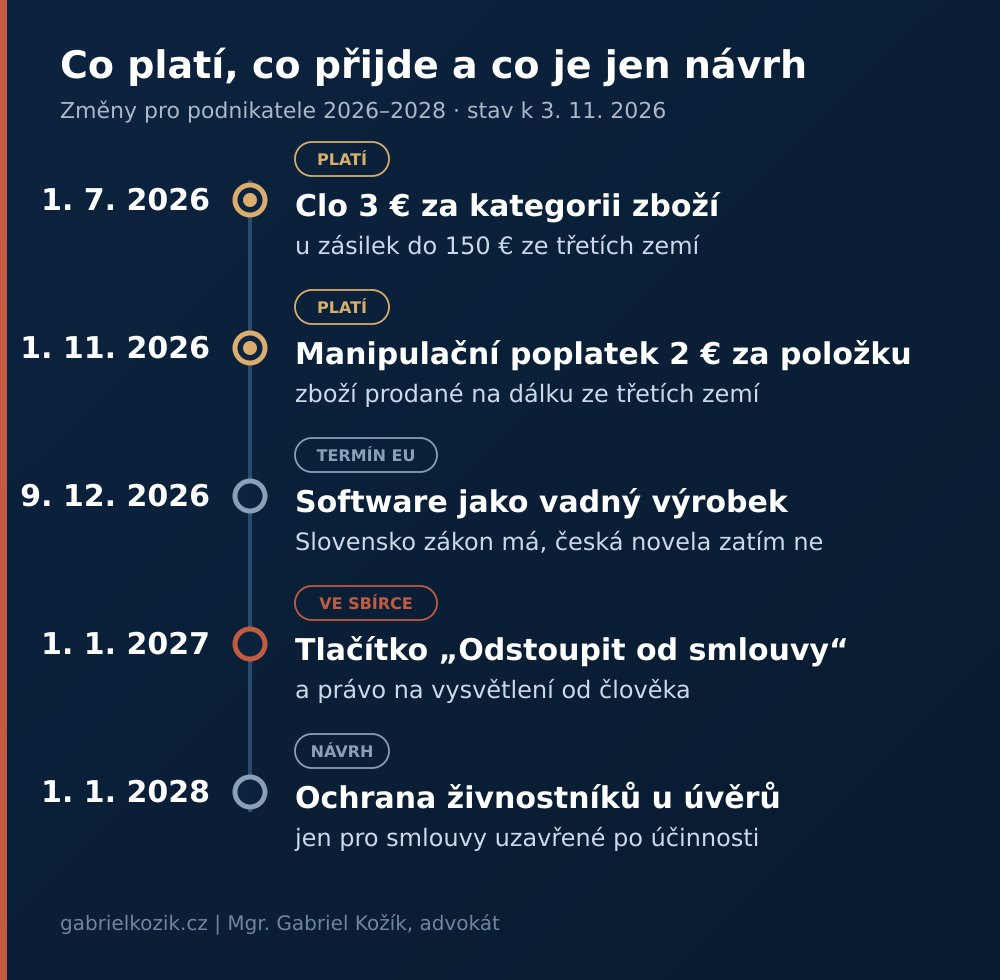

Tlačítko, chatbot a dvě eura za položku: co se mění pro podnikatele do roku 2028

Tři legislativní novinky z posledních týdnů míří na úplně jiné lidi: na živnostníky s úvěrem, na e-shopy se zbožím ze třetích zemí a na každého, kdo prodává online. Spojuje je jedno. Stát přestává počítat s tím, že si slabší strana poradí sama.
Jedna z nich navíc obsahuje pravidlo, které v přehledech pro e-shopy skoro chybí, i když se týká každé firmy, která nechává klienty mluvit s chatbotem.

Proč dávat dohromady tři různé změny?
Spotřebitelské právo se dlouho stavělo na jednoduché hranici: spotřebitel je chráněn, podnikatel si poradí. Tahle hranice se teď posouvá dvěma směry. Ochrana se rozšiřuje na drobné podnikatele a zároveň se zpřísňují pravidla pro digitální kanály, kterými se dnes uzavírá většina smluv.
Úvěry pro živnostníky: zatím jen návrh
Ministerstvo financí poslalo v září do připomínkového řízení novelu, která má podnikajícím fyzickým osobám dát část ochrany, jakou dnes mají spotřebitelé. Klíčová změna se týká zesplatnění úvěru. Když dnes podnikateli zbývá splatit 100 000 Kč jistiny a úroky do konce splácení dělají dalších 50 000 Kč, může věřitel při zesplatnění žádat hned 150 000 Kč. Podle návrhu by mohl okamžitě chtít jen jistinu a úroky by nabíhaly postupně.
Druhá část novely zpřísňuje notářské zápisy se svolením k vykonatelnosti. Dlužník bude muset být u sepisu osobně, takže zápis už nepůjde podepsat přes plnou moc pro věřitele.
Pro přesnost: jde o úvěry a zápůjčky, ne o leasing, a netýká se to právnických osob. Je to zatím jen návrh, účinnost se navrhuje od 1. 1. 2028 a jen pro smlouvy uzavřené po tomto datu.
Od 1. listopadu: dvě eura za položku
U zboží prodaného na dálku ze třetích zemí se od 1. listopadu 2026 vybírá unijní manipulační poplatek 2 eura. Zavedlo ho nařízení Komise v přenesené pravomoci (EU) 2026/2152, vyhlášené v Úředním věstníku 22. října. Platí bez ohledu na hodnotu zásilky a přidává se ke clu 3 eura za kategorii zboží, které se u levných zásilek vybírá od července.
Pozor na slovo „položka“. Česká jazyková verze nařízení chybně mluví o kusech a Celní správa na chybu upozornila. Pět stejných triček v jedné zásilce by tak mělo být jednou položkou. Jak přesně se budou počítat smíšené zásilky, se teprve ustaluje.
Dopadá to hlavně na dropshipping, prodejce na platformách a deklaranty. Firma, která si ze třetí země dováží komponenty pro vlastní výrobu, poplatek typicky neplatí, protože nejde o prodej na dálku.
Od 1. ledna 2027: tlačítko „Odstoupit od smlouvy“
Zákon č. 159/2026 Sb. vyšel ve Sbírce 2. září a účinnost má od 1. ledna 2027. Nezavádí nové právo na odstoupení, jen nový způsob, jak ho uplatnit. Kdo uzavírá smlouvy se spotřebiteli přes web nebo aplikaci, musí jim umožnit odstoupit přímo v on-line rozhraní (nový § 1830a občanského zákoníku). V praxi to znamená:
- Tlačítko. S nápisem „Odstoupit od smlouvy“ nebo jinou jednoznačnou formulací, funkční po celou dobu, kdy lze odstoupit.
- Dva kroky. Zákazník nejdřív vyplní nebo potvrdí jméno, údaje o smlouvě a kontakt pro potvrzení. Pak prohlášení odešle tlačítkem „Potvrdit odstoupení od smlouvy“.
- Potvrzení. Podnikatel bez zbytečného odkladu potvrdí přijetí v textové podobě, s obsahem prohlášení a s datem a časem odeslání. Pouhá hláška na webu podle mě nestačí.
Informaci o tlačítku je potřeba doplnit do předsmluvních informací a obchodních podmínek. Za chybějící tlačítko hrozí pokuta až 5 milionů Kč. Otevřená zůstává otázka, zda chybějící informace o této možnosti neprodlouží lhůtu k odstoupení až o rok. Tlačítko se netýká B2B prodeje ani zboží, u kterého právo na odstoupení nevzniká, například zboží na míru nebo rychle se kazícího.
Proč mě nejvíc zaujal chatbot
Zákon č. 159/2026 Sb. je hlavně o finančních službách sjednávaných na dálku a tlačítko je jen jeho část. Uvnitř je pravidlo, o kterém se skoro nemluví. Podnikatel musí spotřebiteli ještě před uzavřením smlouvy bezplatně vysvětlit předsmluvní údaje, hlavní vlastnosti služby a její dopady, aby spotřebitel mohl posoudit, jestli mu smlouva odpovídá.
Pokud k tomu podnikatel použil pouze automatizovaný on-line nástroj, typicky chatbota nebo robo-poradce, má spotřebitel právo na vysvětlení člověkem (§ 1845 odst. 2 občanského zákoníku). Platí to před uzavřením smlouvy a v odůvodněných případech i po něm, a to v jazyce, ve kterém spotřebitel dostal předsmluvní informace. Že údaje sdělil a vysvětlil, musí v případě pochybností prokázat podnikatel (§ 1845a).
Rozsah je zatím úzký. Spotřebitelské úvěry, pojištění nebo investiční služby mají vlastní sektorová pravidla, která mají přednost. Princip je ale podstatný i mimo finanční sektor: automat smí s klientem mluvit, ale nesmí být poslední instancí. Soudy to vidí podobně. Air Canada neuspěla s argumentem, že za slib svého chatbota neručí, více píšu v článku AI před soudem. Kdo dnes nasazuje AI do zákaznické podpory, by měl počítat s tím, že se tenhle model bude šířit.
AI s klientem mluvit může. Odpovědnost za to, co řekne, ale zůstává na firmě.
A ještě 9. prosinec: software jako vadný výrobek
Do 9. prosince 2026 mají členské státy převzít směrnici (EU) 2024/2853 o odpovědnosti za vadné výrobky, podle které je výrobkem i software včetně systémů AI. Slovensko ji má v zákoně č. 242/2026 Z. z. s účinností právě od 9. prosince. Česká novela občanského zákoníku ke dni vydání tohoto článku ve Sbírce není.
Kdo dodává software nebo výrobky se softwarem na Slovensko nebo do dalších států, které transpozici stihly, se proto novému režimu přiblíží dřív než doma. Vůči poškozenému přitom odpovědnost za vadný výrobek nejde smluvně omezit ani vyloučit. Proč na limitace v obchodních podmínkách nespoléhat, jsem rozebral v článku Když AI udělá chybu, účet jde za vámi.
Co udělat ještě letos
- E-shopy: nasadit tlačítko, otestovat potvrzovací e-mail, upravit obchodní podmínky a předsmluvní informace.
- Zboží ze třetích zemí: přepočítat náklady podle položek, ne podle zásilek.
- Firmy s chatbotem: ujasnit si, kdy do konverzace vstupuje člověk, jak o to zákazník požádá a jak se to dokládá.
- Dodavatelé softwaru na Slovensko a do EU: projít smlouvy a pojištění s ohledem na novou odpovědnost za vadný výrobek.
- Živnostníci s úvěrem: zatím nic, jen sledovat, jestli návrh projde.
Prodáváte online, nebo máte v zákaznické komunikaci chatbota? Úvodních 30 minut konzultace je zdarma a lidskou řečí.
Domluvit konzultaciZdroje a doporučené čtení:
- Zákon č. 159/2026 Sb., kterým se mění některé zákony v souvislosti se smlouvami o finančních službách uzavíranými na dálku (e-Sbírka)
- Nařízení Komise v přenesené pravomoci (EU) 2026/2152 o unijním manipulačním poplatku (EUR-Lex)
- Celní správa ČR: upozornění na chybu v české jazykové verzi nařízení (EU) 2026/2152, 26. 10. 2026
- Ministerstvo financí: tisková zpráva k ochraně OSVČ u úvěrů, 25. 9. 2026
- Směrnice (EU) 2024/2853 o odpovědnosti za vadné výrobky (EUR-Lex)
- Zákon č. 242/2026 Z. z. o zodpovednosti za škodu spôsobenú vadným výrobkom (Slov-Lex)